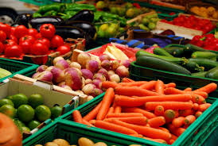
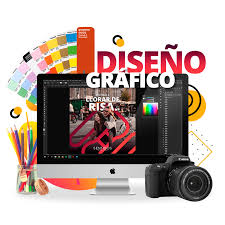
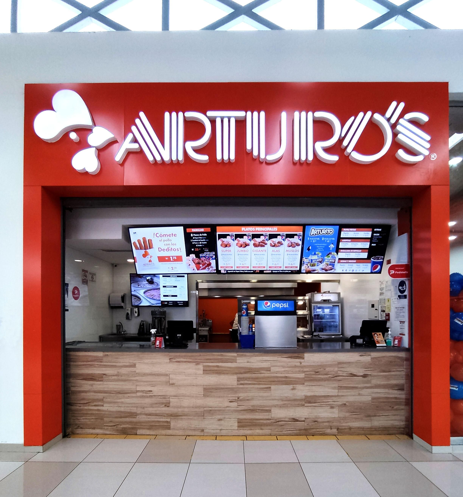
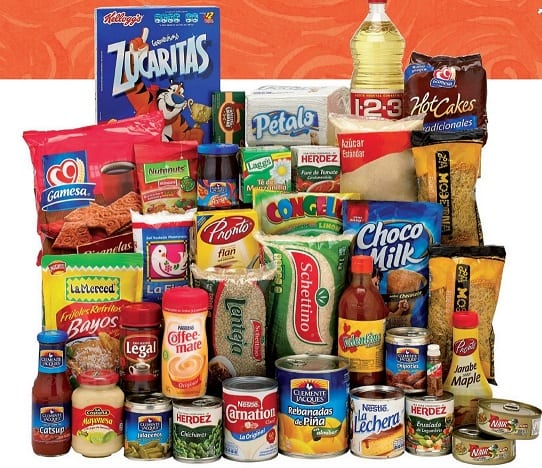

10 Ideas de Negocios Más Rentables en Venezuela
1. Venta de productos agrícolas locales
El cultivo y la venta de productos frescos y orgánicos en mercados locales es una excelente opción. En tiempos de crisis, la comida fresca siempre tiene demanda.
2. Comercio Electrónico
Crear una tienda online para la venta de productos de diversas categorías. Debido a la alta penetración de internet, es un negocio rentable que está en auge.

3. Servicios de entrega a domicilio
El delivery de productos o alimentos se ha convertido en un negocio imprescindible. Se puede crear un emprendimiento que ofrezca este tipo de servicio de manera personalizada.
4. Consultoría para emprendedores
El servicio de asesoría y consultoría para nuevos emprendedores puede ser un negocio muy rentable, ayudando a aquellos que desean iniciar su propio proyecto.
5. Venta de productos tecnológicos
Los productos tecnológicos son siempre demandados. Desde accesorios hasta dispositivos electrónicos, pueden ofrecerse a través de una tienda online o física.
6. Educación en línea
El mercado de cursos online está en expansión. Ofrecer clases o servicios educativos especializados es una idea con gran potencial.
Servicios de diseño gráfico
7. El diseño gráfico es indispensable para los negocios digitales. Ofrecer servicios de creación de logos, branding, y material visual es una excelente oportunidad de negocio.
8. Agencia de marketing digital
Con el aumento de la presencia digital de empresas, crear una agencia especializada en marketing online es un negocio con una gran demanda.

9. Franquicias locales
Invertir en una franquicia local puede ser una forma rápida de comenzar un negocio con un modelo probado y con apoyo de la marca.
10. Producción de alimentos procesados
La producción de alimentos procesados como conservas, jugos y otros productos tiene una gran oportunidad en Venezuela debido a la escasez de productos frescos.
